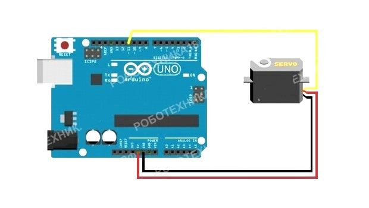

Servo drive (servomotor) տարբեր ռոբոտների և մեխանիզմների նախագծման կարևոր տարր է: Սա ճշգրիտ կատարող է, որն ունի հետադարձ կապ, որը թույլ է տալիս ճշգրիտ վերահսկել մեխանիզմների շարժումները:
Սերվո շարժիչը բաղկացած է սենսորից (արագությունը, դիրքը և այլն), մեխանիկական համակարգից, շարժիչի կառավարման միավորից և էլեկտրոնային միացումից: Սարքի ռեդուկտորները (փոխանցումները) պատրաստված են մետաղից, ածխածնի մանրաթելից կամ պլաստմասից։ Սերվոմատորի պլաստմասե վերնամասերը չեն դիմանում ծանր բեռների և ցնցումների:
Սերվոմոտորն ունի ներկառուցված պոտենցիոմետր, որը միացված է ելքային լիսեռին: Լիսեռը պտտվելով, սերվոն փոխում է
պոտենցիոմետրի լարման արժեքը: Պլատան վերլուծում է մուտքային ազդանշանի լարումը և համեմատում այն պոտենցիոմետրի լարման հետ՝ ելնելով ստացված արդյունքից շարժիչը սահուն կերպով կպտտվի,
այնքան ժամանակ, մինչև կհավասարվի ելքի և պոտենցիոմետրի լարումները:
Servo-ն Arduino-ին միացնելու սխեման սովորաբար հետևյալն է. սև լարը միացրեք GND-ին, կարմիր լարը միացրեք 5 Վ-ին, նարնջագույն/դեղին մետաղալարը ընդհանուր նշանակության թվային պինին: Servo կառավարումը Arduino-ում բավականին պարզ է, բայց servo-ները պտտման անկյունների առումով բաժանվում են 180 ° և 360 °, ինչը պետք է հաշվի առնել սերվոյի օգտագործմամբ նախագծեր մշակելիս:
| Սերվո | Ardunio Uno | Ardunio Nano | Ardunio Mega |
| սև մետաղալար | GND | GND | GND |
| Կարմիր մետաղալար | 5վ | 5վ | 5վ |
| դեղին մետաղալար | 11 | 11 | 11 |
Միացրեք սերվոն Arduino տպասալինին և վերբեռնեք սկետչը: void() և loop() մեթոդներում մենք կսահմանենք սերվոյի պտտման ցանկալի անկյունը և մինչև հաջորդ պտույտը սպասելու ժամանակը:
#include < Servo .h> // ներառել գրադարանը սերվոյի հետ աշխատելու համար
Servo servo1 ; // հայտարարել «servo» տիպի servo1 փոփոխական
void setup () {
servo1. attach (11); // կապել սերվոն պին 11
}
void loop () {
servo1.write (0); // սահմանել ռոտացիայի անկյունը 0
delay (2000); // սպասեք 2 վայրկյան
servo1. write (90); // սահմանել ռոտացիայի անկյունը 90
delay (2000 ); // սպասեք 2 վայրկյան
servo1. write (180); // սահմանել ռոտացիայի անկյունը 180
delay (2000 ); // սպասել 2 վայրկյան
}